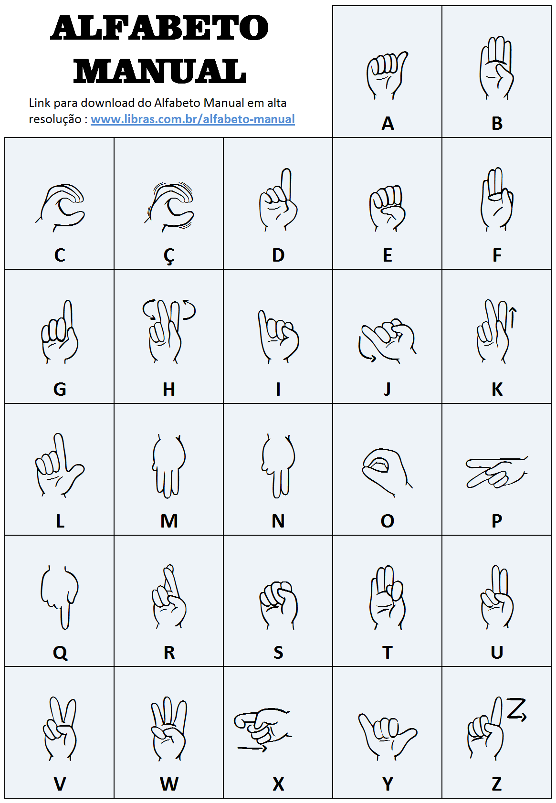

Como as pessoas ouvem?
A audição ocorre por meio de três partes do ouvido: externo, médio e interno. O ouvido externo capta os sons através do pavilhão auricular e do canal auditivo, onde a cera protege contra impurezas. No ouvido médio, a membrana timpânica e três pequenos ossos (martelo, bigorna e estribo) transmitem as vibrações sonoras para o ouvido interno. A cóclea, localizada no ouvido interno, converte esses sons em impulsos elétricos que são enviados ao cérebro para interpretação. Problemas em qualquer uma dessas partes podem causar diferentes graus de perda auditiva.
As causas da surdez
Em muitos casos, a causa da perda auditiva não é identificada, especialmente quando há complicações durante a gestação ou parto, ou doenças maternas próximas ao nascimento. Cerca de 50% dos casos de surdez têm origem desconhecida, enquanto as causas mais comuns identificadas incluem doenças hereditárias, rubéola materna e meningite.
Como detectar a perda auditiva em uma criança?
O diagnóstico e a história de cada indivíduo, como o momento da perda auditiva e o grau de comprometimento, ajudam na compreensão da deficiência. O tipo de atendimento reabilitacional recebido, como métodos orais ou com sinais/gestos, além do apoio familiar, é fundamental para a integração da pessoa surda na sociedade.
A perda auditiva severa ou profunda é mais fácil de detectar do que a leve ou moderada, por isso é essencial que familiares e pediatras fiquem atentos aos sinais desde as primeiras semanas de vida. Se o bebê for muito quieto, não reagir a sons altos ou não se acalmar com a voz da mãe, pode ser um indicativo de problema auditivo, e o pediatra deve ser consultado para avaliar a necessidade de encaminhamento a um especialista.
Quando a perda auditiva é identificada precocemente, o profissional de saúde orienta os pais sobre como lidar com a situação. Esse suporte inicial é fundamental para que a família possa acolher a criança da melhor forma e aprender a enfrentar os desafios da surdez com mais preparo.
Após o diagnóstico da perda auditiva e a definição do seu grau, o médico deve encaminhar a criança para um tratamento fonoaudiológico integrado. Esse tratamento será conduzido por um fonoaudiólogo, com o apoio de uma equipe especializada conforme a necessidade do caso. Em algumas situações, o profissional pode recomendar o uso de um aparelho auditivo para melhorar a capacidade auditiva da criança e auxiliar no seu desenvolvimento comunicativo.
Línguas de sinais
A língua de sinais, também chamada de língua gestual, é um sistema de comunicação baseado em gestos e sinais, utilizado principalmente por pessoas surdas. Ao contrário do que muitos pensam, ela não é apenas uma coleção de gestos ou mímicas, mas uma língua natural com gramática e léxico próprios. Assim como as línguas faladas, cada comunidade de surdos desenvolveu sua própria língua de sinais ao longo do tempo, resultando em diferentes variantes ao redor do mundo, como:
Libras = Língua Brasileira de Sinais
LGP = Língua Gestual Portuguesa
SLN = Sign Language of Netherlands
ASL = American Sign Language
LSA = Lengua de Señas Argentina
BSL = British Sign Language
LSCH = Lengua de Señas Chilena
LSF = Langue des Signes Française
Esse sistema linguístico é reconhecido e estudado por linguistas, pois permite que os surdos se comuniquem de forma completa e eficaz, expressando qualquer assunto de seu interesse ou conhecimento.
LIBRAS - Língua Brasileira de Sinais
Libras é a sigla para Língua Brasileira de Sinais, uma língua de modalidade gestual-visual que permite a comunicação por meio de gestos, expressões faciais e corporais. Reconhecida como meio legal de comunicação e expressão desde 24 de abril de 2002, pela Lei nº 10.436, a Libras desempenha um papel crucial na interação com pessoas surdas, sendo uma ferramenta essencial para a inclusão social.
